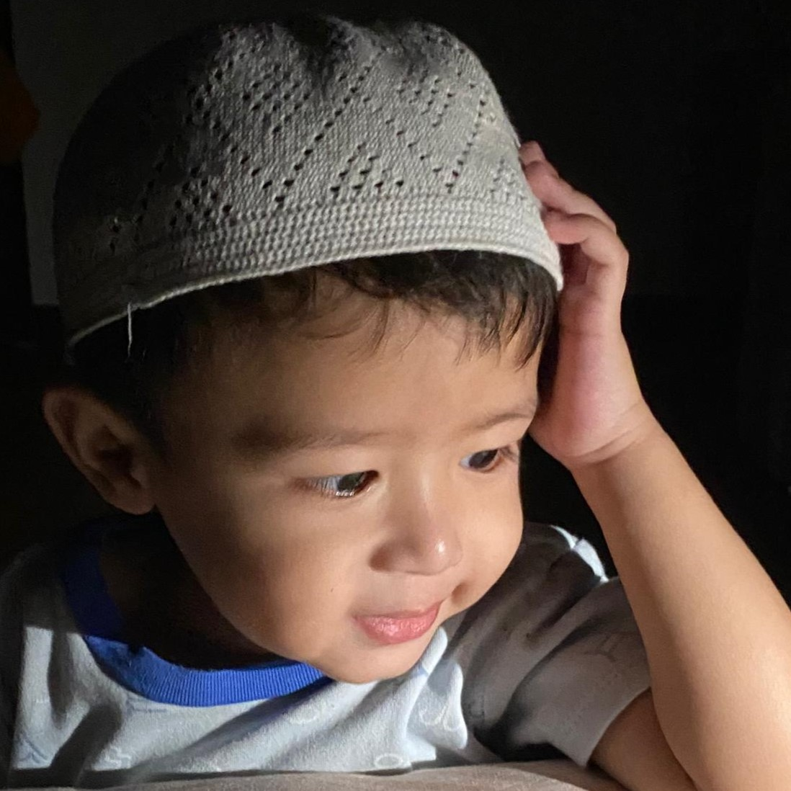
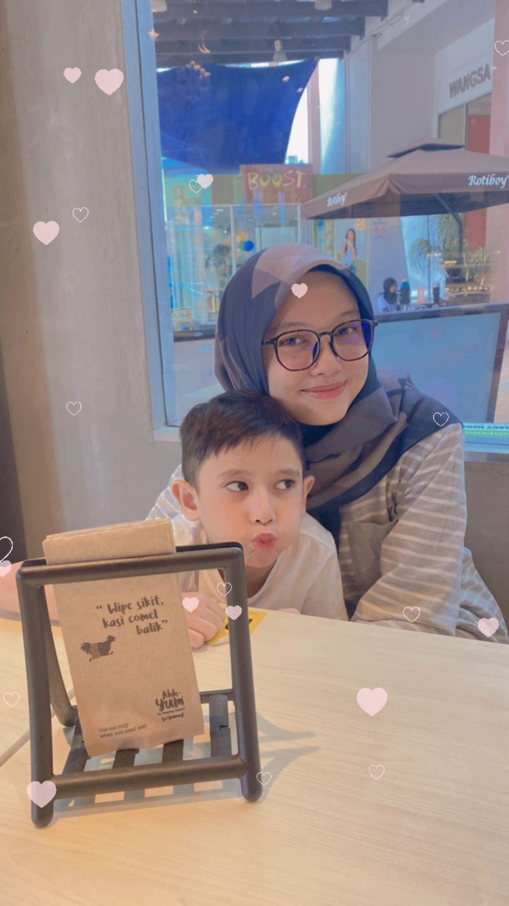
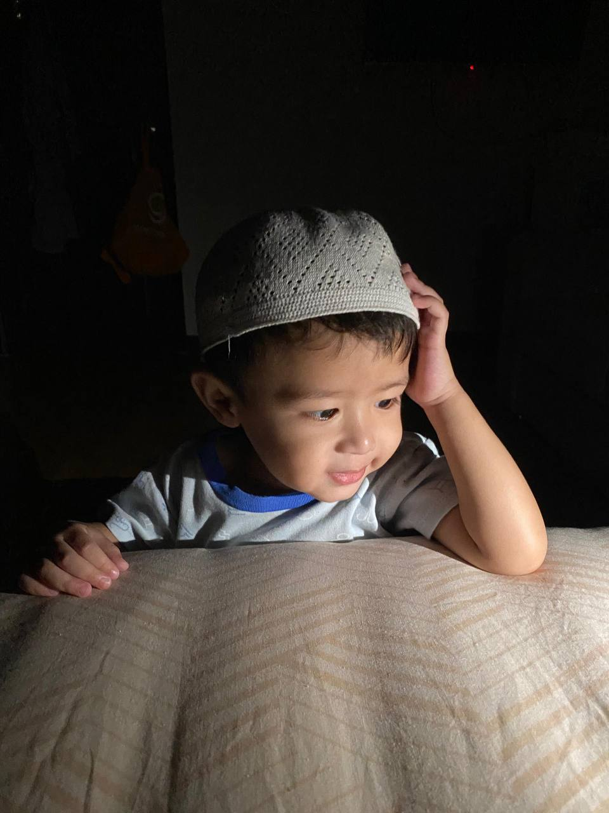

FAMILIA


Intro

A child (pl. children) is a human being between the stages of birth and puberty,[1][2] or between the developmental period of infancy and puberty.[3]
The term may also refer to an unborn human being.[4][5] In English-speaking countries, the legal definition of child generally refers to a minor, in this case as a person younger than the local age of majority (there are exceptions like, for example, the consume and purchase of alcoholic beverage even after said age of majority[6]), regardless of their physical, mental and sexual development as biological adults.
Developmental stages of childhood
Early childhood follows the infancy stage and begins with toddlerhood when the child begins speaking or taking steps independently.
While toddlerhood ends around age 3 when the child becomes less dependent on parental assistance for basic needs, early childhood continues approximately until the age of 5 or 6.